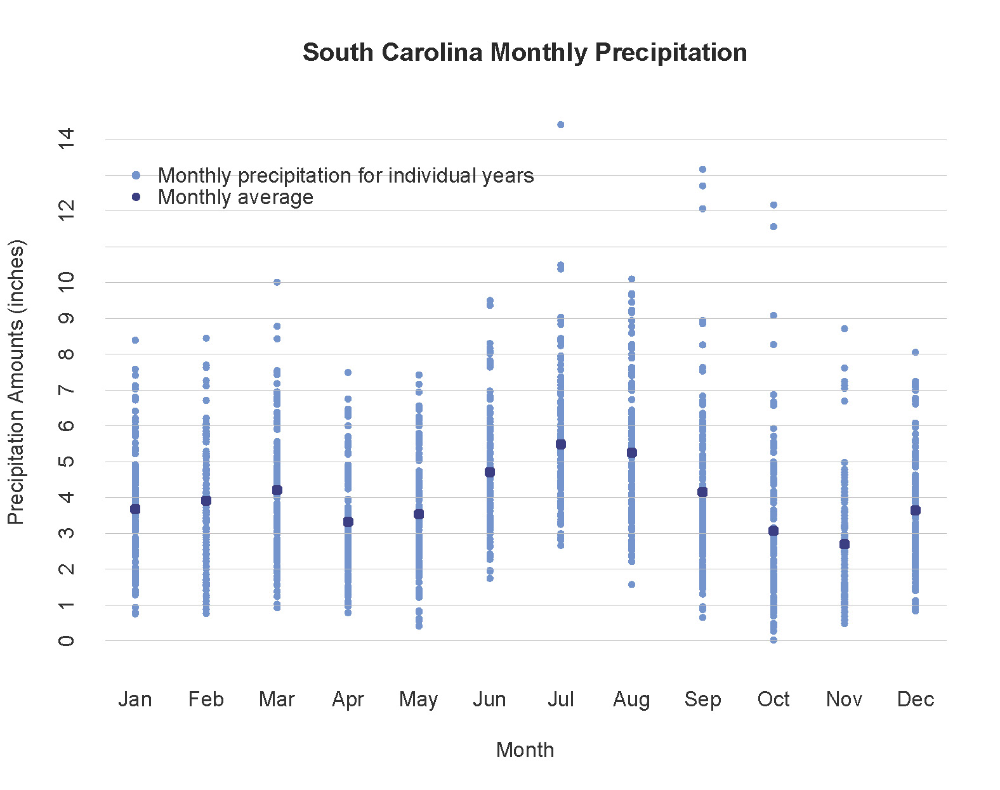

South Carolina Drought 101
Frequently Asked Questions
- What is drought?
- What are the types of drought?
- How do we know when South Carolina is in a drought?
- What is normal precipitation for South Carolina?
- What causes droughts in South Carolina?
- How are droughts measured and assessed?
- What is the difference between drought indicators, drought indices, and drought impacts?
- Who monitors and identifies drough in South Carolina?
What is drought?
Drought is a normal part of climate variability that occurs in every type of climate. Drought is caused by a lack of precipitation over an extended period of time, often resulting in a water shortage for some activity, sector, or the environment. In contrast to other environmental hazards, droughts develop slowly over a period of weeks, months or years.
Drought is the second most costly weather and climate disaster affecting the United States, preceded only by tropical cyclones. From 1980 to 2016, monetary losses caused by droughts equaled $226 billion, or 19% of total losses from natural disasters. Drought, in conjunction with associated heat waves, also contributed to 2,993 deaths during that time period.
Although South Carolina typically receives adequate precipitation, droughts can occur at any time of the year and last for several months to several years. Recent droughts have impacted agriculture, forestry, tourism, power generation, public water supply, fisheries, and ecosystems. Drought conditions can also contribute to diminished water and air quality, increased public health and safety risks, and reduced quality of life and social well-being.
What are the types of drought?
Meteorological drought is an extended period of departure from average precipitation for a specific location or region. The amount of deficit is determined using the normal amount of precipitation that would be expected over a given time period for that same location.

Agricultural drought is a lack of adequate moisture to sustain plant growth and development.

Hydrological drought is measured by effects on streamflow, reservoirs, lakes, and groundwater. As these effects may take longer to become noticeable, hydrological drought often lags behind meteorological and agricultural droughts.
Ecological drought is a prolonged and widespread deficit in available water or soil moisture that stresses aquatic and terrestrial ecosystems.
How do we know when South Carolina is in a drought?
South Carolina normally experiences considerable variability in the rainfall it receives, so it can be difficult to know exactly when a drought is beginning, worsening, or ending. As a first step, understanding what is “normal” can help inform those who monitor conditions and make determinations about whether South Carolina is in drought, or not. Measuring droughts is difficult because they can span large regions, vary in terms of severity and duration, and affect different water uses and sectors at differing time scales. South Carolina uses multiple indicators and indices to monitor drought.
What is normal precipitation for South Carolina?
The long-term, statewide annual precipitation average is 47.66 inches.
South Carolina’s precipitation varies by region.
The Upstate region receives the highest annual averages, ranging from 48 inches to between 70 and 80 inches of rainfall at the highest elevations. The central region is, on average, the State’s driest. Annual totals are less than 48 inches. The Coastal Plain receives annual precipitation amounts that range from 48 to 56 inches.
South Carolina’s precipitation varies by year.
South Carolina’s precipitation varies by season.
Average precipitation is around 3 to 5 inches per month. Summer precipitation is normally the greatest, but can also be the most variable since it is connected to localized showers and thunderstorms. Fall is historically the driest season. Tropical storms and hurricanes, many of which occur in the fall, can be “drought-busters.” Winter and spring precipitation occurs mostly through frontal systems.4
What causes droughts in South Carolina?
Drought in South Carolina can begin during any season. Seasonal variability is often associated with variations in weather patterns, such as changes in pressure, storm tracks, and the jet stream. Other factors, such as extreme heat, wind, and evapotranspiration rates, can also influence the development of droughts.
For the Southeast, the strength and placement of the Bermuda High, a semi-permanent subtropical area of high pressure in the Atlantic Ocean, influences rainfall conditions particularly in spring and summer. Intensification and shifts in this highpressure system has been linked to shifts in storm tracks, decreased summer precipitation, and drought conditions.5
The El Niño–Southern Oscillation (ENSO) is another climate phenomenon that influences dry and wet spells in the State. ENSO fluctuates between three phases: Neutral, cooling La Niña, and warming El Niño. Extremes of these oscillations cause extreme weather. In the southeastern United States winter precipitation tends to be enhanced during the warm phase (El Niño) and reduced during the cold phase (La Niña). There is a less consistent signal during fall and no evident connection between ENSO and spring and summer precipitation.6 The La Niña stage can be an aid for forecasting seasonal droughts in the region.7
How are droughts measured and assessed?
Droughts are assessed in terms of spatial extent, duration, and severity.

The multi-year drought that began in 2007 was accompanied by high summer temperatures and affected the entire Southeast region. US Drought Monitor authors use data available from multiple sources to create the weekly map.
Spatial extent: All South Carolina counties can be affected by drought. Droughts can extend beyond single states into multi-state regions.
Duration: Short-term droughts last less than six months and bring agricultural impacts, especially when occurring during growing season. Long-term droughts last more than six months and can last for many years, affecting hydrology, ecology, and societal well-being.
Severity (or Intensity): Many different indicators and methods are used to measure and monitor drought severity. The choice of an indicator may depend on the type of drought being considered, the impacts of most interest, and the region or location in which drought is occurring. Due to drought’s complexity, multiple indicators are often used to depict severity.
What is the difference between drought indicators, drought indices, and drought impacts?
Indicators are values used to describe drought conditions, using precipitation, stream flow, groundwater and reservoir levels, or soil moisture information.
Indices are computed numerical representations of drought severity, using climatic or hydrological data as inputs. For example, the South Carolina Drought Response Committee uses the Palmer Drought Severity Index (PDSI), Crop Moisture Index (CMI), Keetch-Byram Drought Index (KBDI), Standardized Precipitation Index (SPI), and US Drought Monitor (USDM).
An impact is an observable loss or change at a specific time due to drought. Examples include crop loss or damage, closed boat ramps due to low lake levels, or burning restrictions due to higher fire risks.


Who monitors and identifies drough in South Carolina?
The South Carolina Drought Response Committee and the State Climatology Office (within the Land, Water and Conservation Division of the South Carolina Department of Natural Resources) address drought related issues and response in South Carolina. The Drought Response Committee is composed of statewide and local members.
The State Climatology Office routinely monitors climatic conditions in the State. The Drought Response Committee meets regularly when needed to evaluate conditions and impacts within Drought Management Areas. The committee votes county by county to issue drought status declarations in four drought severity categories: incipient, moderate, severe, and extreme.10 Each severity category initiates a certain level of drought response.
The South Carolina Drought Response Committee uses multiple indicators and indices to monitor drought. Listed below are the indices identified in the South Carolina Drought Regulations, with their characteristics.11 Current drought status is shown on the South Carolina State Climatology Office website .
The Indicators and Indices used by the South Carolina Drought Response Committee are outlined on the Drought Conditions page.
References
- NOAA National Centers for Environmental Information, U.S. Billion-Dollar Weather and Climate Disasters, 2017, https://www.ncdc.noaa. gov/billions/
- National Drought Mitigation Center, Types of Drought, http://drought.unl.edu/DroughtBasics/TypesofDrought.aspx
- South Carolina’s total precipitation by month for 1895-2016.Data: Southeast Regional Climate Center.
- Mizzell, H. and J. Simmons, 2015, South Carolina’s Climate Report Card: The Influence of the El Niño Southern Oscillation Cold and Warm Event Cycles on South Carolina’s Seasonal Precipitation. Journal of South Carolina Water Resources 2 (1): 3-10.
- Labosier, C. F. and S. M. Quiring. 2013. Hydroclimatology of the Southeastern USA. Climate Research 57: 157-171. doi: 10.3354/cr01166/li>
- Mizzell and Simmons, 2015. http://tigerprints.clemson.edu/cgi/viewcontent.cgi?article=1015&context=jscwr
- See NOAA’s Climate.gov for more information about ENSO: What is the El Niño-Southern Oscillation (ENSO) in a nutshell? El Niño and La Niña: Frequently asked questions Dry Winter in U.S. Southeast
- The U.S. Drought Monitor is jointly produced by the National Drought Mitigation Center at the University of Nebraska-Lincoln, the United States Department of Agriculture, and the National Oceanic and Atmospheric Administration. Map courtesy of NDMC-UNL.
- WMO, & GWP. (2016). Handbook of drought indicators and indices. https://doi.org/10.1007/s00704-016-1984-6
- More information is available on the Drought Program page, South Carolina State Climatology Office, http://www.dnr.sc.gov/climate/sco/ Drought/drought_current_info.php
- WMO, & GWP. (2016). Handbook of drought indicators and indices. https://doi.org/10.1007/s00704-016-1984-6